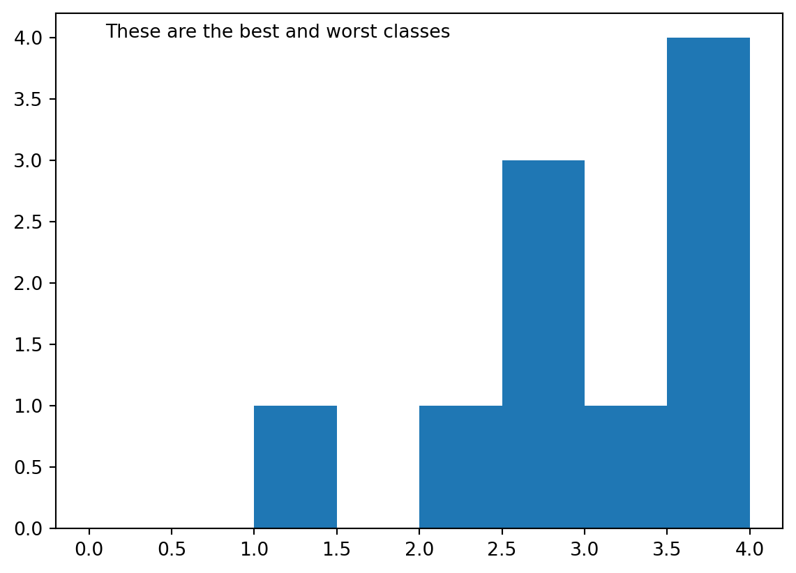
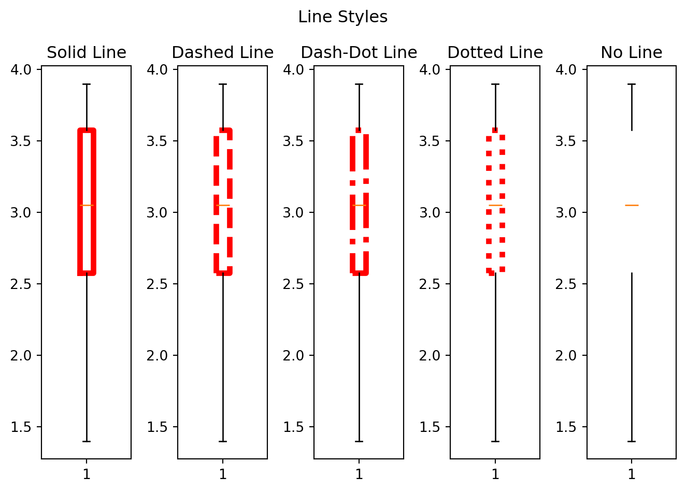

import pandas as pd
import matplotlib.pyplot as pltAn Introduction to Visualizations in Python
Introduction
Data visualization transforms raw numbers into meaningful insights that drive better decision-making. In this comprehensive tutorial, you’ll master the essential skills of creating clear, informative visualizations using pandas and matplotlib.
We’ll start by creating a dataset in pandas. Then we’ll explore three fundamental distribution plots: histograms, boxplots, and density plots alongside matplotlib’s universal functions that enhance any plt. Each section builds upon the previous one, progressing from basic plot creation to advanced customization techniques that will make your visualizations both professional and impactful.
By the end of this tutorial, you’ll have the knowledge and confidence to transform any dataset into compelling visual stories that clearly communicate your data’s most important patterns and insights.
(A future blog post will cover downloading a dataset into pandas, and plotting graphs for the relationship between two or more features.)
Learning Pandas
Creating a dataset
In order to visualize data effectively, we first need to obtain some. We’ll use pandas to create a small, manageable dataset that will serve as our foundation for learning visualization techniques.
We begin by importing our essential libraries. those being pandas for data manipulation and matplotlib for creating visualizations.
Now we’ll design our dataset structure by deciding on the number of features (which will become our columns). For this example, our dataset will have 4 features: name, gpa, major, and year. We’ll also determine the size of our dataset, which in this case will be 10. Ten entries will provide enough data to demonstrate various visualization techniques without overwhelming complexity.
To create this dataset programmatically, we’ll first construct 4 lists containing 10 items each.
name = ["Alice", "Bob", "Charlie", "Diana", "Ethan", "Fiona", "George", "Hannah", "Isaac", "Julia"]
gpa = [3.5, 2.8, 3.9, 3.2, 2.5, 1.4, 2.9, 3.8, 2.2, 3.6]
major = ["Math", "Computer Science", "Statistics", "Math", "Computer Science", "Statistics", "Math", "Computer Science", "Statistics", "Math"]
year = ["Freshman", "Sophomore", "Junior", "Senior", "Freshman", "Sophomore", "Junior", "Senior", "Freshman", "Sophomore"]Now that we have our feature data prepared, we’ll combine them into a pandas DataFrame using a dictionary structure. The pd.DataFrame() constructor accepts a dictionary where keys become column names and values become the column data, providing the structured format necessary for effective data analysis and visualization.
data = {
"name": name,
"gpa": gpa,
"major": major,
"year": year
}
df = pd.DataFrame(data)Inspecting a dataset
Before creating visualizations, it’s crucial to understand your data’s structure and contents. Pandas provides several powerful methods for data exploration and inspection, each serving different analytical needs.
The .head() method accepts an optional integer parameter (default value is 5) and displays that number of rows of your dataset. This function provides a quick preview of your data’s structure and content, helping you verify that your data loaded correctly and understand the format of each column.
(This isn’t particularly helpful when we have created our own dataset by hand, but if you download a dataset, or simply create a much larger one that has more randomness to it, then this is still useful to ensure it is all correctly formatted.)
df.head()| name | gpa | major | year | |
|---|---|---|---|---|
| 0 | Alice | 3.5 | Math | Freshman |
| 1 | Bob | 2.8 | Computer Science | Sophomore |
| 2 | Charlie | 3.9 | Statistics | Junior |
| 3 | Diana | 3.2 | Math | Senior |
| 4 | Ethan | 2.5 | Computer Science | Freshman |
To view the entire dataset, you can use the print() function, which displays all rows and columns. This approach is particularly useful for smaller datasets where you want to see every data point. However, it isn’t really viable for larger datasets, which is why you would use .head().
print(df) name gpa major year
0 Alice 3.5 Math Freshman
1 Bob 2.8 Computer Science Sophomore
2 Charlie 3.9 Statistics Junior
3 Diana 3.2 Math Senior
4 Ethan 2.5 Computer Science Freshman
5 Fiona 1.4 Statistics Sophomore
6 George 2.9 Math Junior
7 Hannah 3.8 Computer Science Senior
8 Isaac 2.2 Statistics Freshman
9 Julia 3.6 Math SophomoreFor examining specific features, you can access individual columns by using bracket notation with the column name as a string. This operation returns a pandas Series containing all values from that column, making it easy to focus on particular variables.
df["gpa"]0 3.5
1 2.8
2 3.9
3 3.2
4 2.5
5 1.4
6 2.9
7 3.8
8 2.2
9 3.6
Name: gpa, dtype: float64The .loc function provides another method of obtaining columns by using label-based indexing. It accepts row and column specifications separated by a comma, where the first parameter specifies rows and the second specifies columns.
Using : (which you may be familiar with from Python) selects all rows, while providing a list of string column names selects specific columns. This method is particularly good for looking at multiple columns simultaneously.
df.loc[:, ["name", "gpa"]]| name | gpa | |
|---|---|---|
| 0 | Alice | 3.5 |
| 1 | Bob | 2.8 |
| 2 | Charlie | 3.9 |
| 3 | Diana | 3.2 |
| 4 | Ethan | 2.5 |
| 5 | Fiona | 1.4 |
| 6 | George | 2.9 |
| 7 | Hannah | 3.8 |
| 8 | Isaac | 2.2 |
| 9 | Julia | 3.6 |
The .iloc function performs integer-location based selection, allowing you to access rows by their numerical index position. It accepts integer values corresponding to row positions (starting from 0), making it ideal for retrieving specific rows.
df.iloc[0]name Alice
gpa 3.5
major Math
year Freshman
Name: 0, dtype: objectFor conditional data selection, you can combine boolean indexing with .loc. This approach filters rows based on specific criteria. For example, you can find all rows where a particular column equals a certain value, as demonstrated below.
df.loc[df["name"] == "Alice"]| name | gpa | major | year | |
|---|---|---|---|---|
| 0 | Alice | 3.5 | Math | Freshman |
This foundational knowledge of pandas data manipulation and inspection provides the essential tools you need to effectively prepare, explore, and understand your data before creating your visualizations.
Distribution Graphs (1 Feature)
First we will show how you can plot a single feature with various distribution graphs.
Histogram
The first visualization we’ll explore is a histogram, which displays the frequency distribution of our data by dividing it into bins. For this example, we’ll examine the distribution of GPA values from our dataset.
We create histograms using plt.hist(), which automatically counts how many data points fall into each range and displays them as bars. To plot only the GPA values, we’ll extract all the information from the gpa column.
An essential aspect of using matplotlib is that you should always use the .show() function after creating a graph. Without it, you’ll see unwanted return text that clutters your visualization. Allow me demonstrate the difference.
plt.hist(df["gpa"])(array([1., 0., 0., 1., 1., 1., 1., 1., 2., 2.]),
array([1.4 , 1.65, 1.9 , 2.15, 2.4 , 2.65, 2.9 , 3.15, 3.4 , 3.65, 3.9 ]),
<BarContainer object of 10 artists>)
plt.hist(df["gpa"])
plt.show()
You may notice that even the clean version above doesn’t look optimal, the x-axis ranges from 1.4 to 3.9. This happens because we haven’t specified the optional bins and range parameters.
The bins parameter accepts an integer and determines how many equal-width intervals your data is divided into. If not specified, matplotlib automatically creates 10 evenly spaced bins. The range parameter accepts a tuple of two float values (min, max) and sets the boundaries for your histogram. If not specified, it uses the natural minimum and maximum of your data.
However, since we know that GPAs typically range from 0.0 to 4.0, we can adjust our visualization accordingly.
plt.hist(df["gpa"], range = (0.0, 4.0))
plt.show()
Now that our data is more accurately represented within the proper GPA scale, let’s explore how different numbers of bins affect the visualization.
plt.hist(df["gpa"], range = (0.0, 4.0), bins = 4)
plt.show()
plt.hist(df["gpa"], range = (0.0, 4.0), bins = 8)
plt.show()
These aren’t the only customization options for histograms. The orientation parameter accepts string values and controls whether bars are displayed vertically or horizontally, with the graph defaulting to vertical.
plt.hist(df["gpa"], range = (0.0, 4.0), bins = 8, orientation = "horizontal")
plt.show()Currently, the y-axis shows the count of values falling into each bin. We can change this to display the probability density by setting the density parameter, which accepts a boolean value. When set to True, the histogram shows the relative frequency rather than absolute counts.
plt.hist(df["gpa"], range = (0.0, 4.0), bins = 8, density = True)
plt.show()At first glance, this might seem incorrect since the heights don’t appear to sum to 1. This is because you need to consider both the height and width of each bin. Since each bin is 0.5 units wide, multiplying each bin’s height by 0.5 and summing them gives us 1. Each bin’s area represents the percentage of data within that range.
The histtype parameter accepts string values and specifies the visual style of your histogram bars. There are four options: "bar" (default solid bars), "step" (unfilled outlines), "stepfilled" (filled step plots), and "barstacked" (for multiple datasets). Allow me to show you each.
plt.hist(df["gpa"], range = (0.0, 4.0), bins = 8, histtype = "step")
plt.show()plt.hist(df["gpa"], range = (0.0, 4.0), bins = 8, histtype = "stepfilled")
plt.show()plt.hist(df["gpa"], range = (0.0, 4.0), bins = 8, histtype = "bar")
plt.show()
At first "bar" and "stepfilled" might appear exactly the same. However, the difference becomes more apparent when we add edge lines using the edgecolor parameter, which accepts any valid matplotlib color string.
plt.hist(df["gpa"], range = (0.0, 4.0), bins = 8, histtype = "stepfilled", edgecolor = "black")
plt.show()
plt.hist(df["gpa"], range = (0.0, 4.0), bins = 8, histtype = "bar", edgecolor = "black")
plt.show()The "barstacked" option is designed for comparing multiple datasets by stacking their bars. To demonstrate this properly, we need additional data. Since we’re focusing on a single feature, we’ll create a simple pandas Series.
more_data = pd.Series([2.3, 3.8, 1.4, 2.9, 3.5, 1.8, 2.1, 3.0, 1.2, 0.9])Now we can properly demonstrate the barstacked histogram.
plt.hist([df["gpa"], more_data], range = (0.0, 4.0), bins = 8, histtype = "barstacked")
plt.show()
The rwidth parameter accepts a float value between 0 and 1 and controls the relative width of the bars. The default value of 1 makes bars touch each other, while smaller values create spacing between bars.
plt.hist(df["gpa"], range = (0.0, 4.0), bins = 8, histtype = "bar", rwidth = 0.9)
plt.show()
plt.hist(df["gpa"], range = (0.0, 4.0), bins = 8, histtype = "bar", rwidth = 0.5)
plt.show()
When using narrower bars, you might want to adjust their position within each bin using the align parameter, which accepts string values. The options are "mid" (center-aligned) [and the default], "left" (left-aligned), and "right" (right-aligned).
plt.hist(df["gpa"], range = (0.0, 4.0), bins = 8, histtype = "bar", rwidth = 0.5, align = "left")
plt.show()
plt.hist(df["gpa"], range = (0.0, 4.0), bins = 8, histtype = "bar", rwidth = 0.5, align = "right")
plt.show()The color parameter accepts any valid color string and allows you to customize the appearance of your histogram bars.
plt.hist(df["gpa"], range = (0.0, 4.0), bins = 8, histtype = "bar", rwidth = 0.9, color = "green")
plt.show()
For multiple datasets, you can specify different colors by providing a list of color strings that corresponds to your list of datasets.
plt.hist([df["gpa"], more_data], range = (0.0, 4.0), bins = 8, histtype = "barstacked", color = ["purple", "pink"])
plt.show()
To distinguish between different datasets clearly, use the label parameter, which accepts a list of string values. However, labels require an additional step, that being you must call plt.legend() to display the labels properly on your graph.
plt.hist([df["gpa"], more_data], range = (0.0, 4.0), bins = 8, histtype = "barstacked", color = ["purple", "pink"], label = ["Morning Class", "Evening Class"])
plt.legend()
plt.show()
This covers the most essential aspects of creating and customizing histograms in matplotlib. Histograms are particularly valuable for understanding the frequency distribution of your data and identifying patterns like skewness, outliers, or multiple peaks that might not be apparent in raw numerical form.
Universal Matplotlib Functions
Before diving into specific plot types, it’s essential to understand matplotlib’s universal functions that enhance any visualization. These are functions that work consistently across all graph types.
The plt.xlabel() and plt.ylabel() functions accept string values and add descriptive labels to your axes. These labels should clearly indicate the units of measurement and what each axis represents.
plt.hist(df["gpa"], range = (0.0, 4.0), bins = 8)
plt.xlabel("GPA")
plt.ylabel("Count")
plt.show()
The plt.title() function accepts a string value and creates an overall title for your visualization.
plt.hist(df["gpa"], range = (0.0, 4.0), bins = 8)
plt.title("Grades")
plt.show()
The plt.grid() function accepts a boolean value and adds grid lines to your plot when set to True. While not essential for simple visualizations, grid lines can significantly improve readability for larger datasets or more complex plots.
Additionally, we can specificy an alpha parameter to determine how transparent our graph lines are.
plt.hist(df["gpa"], range = (0.0, 4.0), bins = 8)
plt.grid(True)
plt.show()
plt.hist(df["gpa"], range = (0.0, 4.0), bins = 8)
plt.grid(True, alpha =.5)
plt.show()
The plt.text() function provides the ability to add notes directly onto your graph. It accepts several essential parameters: x-coordinate (float), y-coordinate (float), and the text string.
plt.hist(df["gpa"], range = (0.0, 4.0), bins = 8)
plt.text(.1, 4, "These are the best and worst classes")
plt.show()
For more convenient and consistent text positioning, you can use relative coordinates by setting the transform parameter to plt.gca().transAxes. gca stands for “get current axes,” and does exactly this. transAxes changes the units returned by .gac() from direct units into axis relative units, which range on a scale from 0.0 to 1.0.
Using this parameter with this input allows you to position text using normalized values between 0 and 1, where (0,0) represents the bottom-left corner and (1,1) represents the top-right corner, regardless of your data’s actual scale. In our case, we will put it in the top right corner.
plt.hist(df["gpa"], range = (0.0, 4.0), bins = 8)
plt.text(1.0, 1.0, "This is the best class", transform = plt.gca().transAxes)
plt.show()
However, you may notice that it isn’t staying in the corner of our graph. It is actually going outside the graph. To keep our text inside our graph we need to specify a few more variables. Those being, va and ha.
The ha (horizontal alignment) and va (vertical alignment) parameters accept string values and provide precise control over text positioning relative to the coordinates. The horizontal alignment parameter accepts "left", "center", and "right" values, while vertical alignment accepts "bottom", "center", and "top" values. These parameters ensure your text doesn’t extend beyond plot boundaries.
plt.hist(df["gpa"], range = (0.0, 4.0), bins = 8)
plt.text(0.95, 0.95, "This is the best class", ha = "right", va = "top", transform = plt.gca().transAxes)
plt.show()
The plt.subplots() function enables you to create multiple plots within a single figure, accepting integer values for the number of rows and columns you desire. This function returns both a figure object and an axes array that you can use to place individual plots in an organized layout. A blank one is shown below.
fig, axes = plt.subplots(2, 3)
You access individual subplot positions through indexing by array, where axes[row, column] specifies the exact location for each plot. For our example here, we will use the same plot and simply change the color of each.
fig, axes = plt.subplots(2, 3)
axes[0, 0].hist(df["gpa"], range = (0.0, 4.0), bins = 8, color = "lightblue")
axes[0, 1].hist(df["gpa"], range = (0.0, 4.0), bins = 8, color = "yellow")
axes[0, 2].hist(df["gpa"], range = (0.0, 4.0), bins = 8, color = "teal")
axes[1, 0].hist(df["gpa"], range = (0.0, 4.0), bins = 8, color = "magenta")
axes[1, 1].hist(df["gpa"], range = (0.0, 4.0), bins = 8, color = "cyan")
axes[1, 2].hist(df["gpa"], range = (0.0, 4.0), bins = 8, color = "brown")
plt.show()
To enhance your subplots, use the .set_title() method, which accepts a string value, for individual subplot titles. You can also use plt.suptitle(), also accepting a string, for an overarching title that covers the entire figure. Additionally, the plt.tight_layout() function automatically adjusts spacing between subplots to ensure our plots don’t overlap.
fig, axes = plt.subplots(2, 3)
axes[0, 0].hist(df["gpa"], range = (0.0, 4.0), bins = 8, color = "blue")
axes[0, 0].set_title("Class Blue")
axes[0, 1].hist(df["gpa"], range = (0.0, 4.0), bins = 8, color = "yellow")
axes[0, 1].set_title("Class Yellow")
axes[0, 2].hist(df["gpa"], range = (0.0, 4.0), bins = 8, color = "teal")
axes[0, 2].set_title("Class Teal")
axes[1, 0].hist(df["gpa"], range = (0.0, 4.0), bins = 8, color = "magenta")
axes[1, 0].set_title("Class Magenta")
axes[1, 1].hist(df["gpa"], range = (0.0, 4.0), bins = 8, color = "cyan")
axes[1, 1].set_title("Class Cyan")
axes[1, 2].hist(df["gpa"], range = (0.0, 4.0), bins = 8, color = "brown")
axes[1, 2].set_title("Class Brown")
plt.suptitle("Some graph colors")
plt.tight_layout()
plt.show()
The figsize parameter accepts a tuple of two float values (width, height), measured in inches, and controls the overall dimensions of your figure. Experimenting with different sizes helps you find the optimal display format for your specific visualization needs. I will show you a few different size below, specifically (12,8), (10,6), and (8,4).
fig, axes = plt.subplots(2, 3, figsize = (12, 8))
axes[0, 0].hist(df["gpa"], range = (0.0, 4.0), bins = 8, color = "blue")
axes[0, 0].set_title("Class Blue")
axes[0, 1].hist(df["gpa"], range = (0.0, 4.0), bins = 8, color = "yellow")
axes[0, 1].set_title("Class Yellow")
axes[0, 2].hist(df["gpa"], range = (0.0, 4.0), bins = 8, color = "teal")
axes[0, 2].set_title("Class Teal")
axes[1, 0].hist(df["gpa"], range = (0.0, 4.0), bins = 8, color = "magenta")
axes[1, 0].set_title("Class Magenta")
axes[1, 1].hist(df["gpa"], range = (0.0, 4.0), bins = 8, color = "cyan")
axes[1, 1].set_title("Class Cyan")
axes[1, 2].hist(df["gpa"], range = (0.0, 4.0), bins = 8, color = "brown")
axes[1, 2].set_title("Class Brown")
plt.suptitle("Some graph colors")
plt.tight_layout()
plt.show()
fig, axes = plt.subplots(2, 3, figsize = (10, 6))
axes[0, 0].hist(df["gpa"], range = (0.0, 4.0), bins = 8, color = "blue")
axes[0, 0].set_title("Class Blue")
axes[0, 1].hist(df["gpa"], range = (0.0, 4.0), bins = 8, color = "yellow")
axes[0, 1].set_title("Class Yellow")
axes[0, 2].hist(df["gpa"], range = (0.0, 4.0), bins = 8, color = "teal")
axes[0, 2].set_title("Class Teal")
axes[1, 0].hist(df["gpa"], range = (0.0, 4.0), bins = 8, color = "magenta")
axes[1, 0].set_title("Class Magenta")
axes[1, 1].hist(df["gpa"], range = (0.0, 4.0), bins = 8, color = "cyan")
axes[1, 1].set_title("Class Cyan")
axes[1, 2].hist(df["gpa"], range = (0.0, 4.0), bins = 8, color = "brown")
axes[1, 2].set_title("Class Brown")
plt.suptitle("Some graph colors")
plt.tight_layout()
plt.show()
fig, axes = plt.subplots(2, 3, figsize = (8, 4))
axes[0, 0].hist(df["gpa"], range = (0.0, 4.0), bins = 8, color = "blue")
axes[0, 0].set_title("Class Blue")
axes[0, 1].hist(df["gpa"], range = (0.0, 4.0), bins = 8, color = "yellow")
axes[0, 1].set_title("Class Yellow")
axes[0, 2].hist(df["gpa"], range = (0.0, 4.0), bins = 8, color = "teal")
axes[0, 2].set_title("Class Teal")
axes[1, 0].hist(df["gpa"], range = (0.0, 4.0), bins = 8, color = "magenta")
axes[1, 0].set_title("Class Magenta")
axes[1, 1].hist(df["gpa"], range = (0.0, 4.0), bins = 8, color = "cyan")
axes[1, 1].set_title("Class Cyan")
axes[1, 2].hist(df["gpa"], range = (0.0, 4.0), bins = 8, color = "brown")
axes[1, 2].set_title("Class Brown")
plt.suptitle("Some graph colors")
plt.tight_layout()
plt.show()


These universal matplotlib functions form the backbone of professional data visualization, transforming basic plots into polished graphics. Mastering these tools will significantly enhance the clarity and impact of every plot you create, regardless of the specific plot type you choose.
Boxplot
Boxplots provide a statistical summary of your data’s distribution, showing the median, quartiles, and potential outliers in a compact visual format. Creating a boxplot is straightforward using plt.boxplot(), and like histograms, you can display data from one or multiple datasets.
plt.boxplot(df["gpa"])
plt.show()plt.boxplot([df["gpa"], more_data])
plt.show()
The labels parameter accepts a list of string values and helps differentiate multiple datasets in your boxplot, just like we did with histograms.
plt.boxplot([df["gpa"], more_data], labels = ["Class A", "Class B"])
plt.legend()
plt.show()C:\Users\cnels\AppData\Local\Temp\ipykernel_23492\1134656318.py:1: MatplotlibDeprecationWarning: The 'labels' parameter of boxplot() has been renamed 'tick_labels' since Matplotlib 3.9; support for the old name will be dropped in 3.11.
plt.boxplot([df["gpa"], more_data], labels = ["Class A", "Class B"])
C:\Users\cnels\AppData\Local\Temp\ipykernel_23492\1134656318.py:2: UserWarning: No artists with labels found to put in legend. Note that artists whose label start with an underscore are ignored when legend() is called with no argument.
plt.legend()The showmeans parameter accepts a boolean value and, when set to True, adds a marker indicating the mean value.
plt.boxplot(df["gpa"], showmeans = True)
plt.show()
The meanline parameter accepts a boolean value and changes how the mean is displayed. When set to True, it shows the mean as a line across the box rather than a point marker.
plt.boxplot(df["gpa"], showmeans = True, meanline = True)
plt.show()The vert parameter accepts a boolean value and controls the orientation of your boxplot. Setting it to False creates horizontal boxplots instead of the default vertical ones.
plt.boxplot(df["gpa"], vert = False)
plt.show()
Boxplots offer extensive customization through several property parameters that accept dictionaries containing styling options. The most common properties in these parameters include color, which we’ve already covered, linewidth, which takes float values for line thickness, (and defaults to 1), and linestyle, which accepts string values for line patterns.
The boxprops parameter controls the appearance of the main rectangular box that encompasses the first quartile through the third quartile. It accepts a dictionary of properties. Those being, linewidth, linestyle, edgecolor, and facecolor. Unlike most parameters, this one requires a separate parameter be either activated or deactivated for it to work properly. This parameter being patch_artist. This is because facecolor only works when the patch_artist parameter is set to True, while linestyle only works when patch_artist is set to False.
First I will show you a plot with facecolor followed by one showing linestyle. (Also, take note that if you are omitting facecolor, then you can simply change edgecolor to color, since now there is no other color to confuse it with.)
plt.boxplot(df["gpa"], patch_artist = True, boxprops = dict(facecolor = "red", edgecolor= "pink", linewidth = 2))
plt.show()plt.boxplot(df["gpa"], patch_artist = False, boxprops = dict(color = "red", linestyle = "--", linewidth = 2))
plt.show()
The linestyle parameter offers several string options for line appearance, those being:
"-"→ solid line"--"→ dashed line"-."→ dash-dot line":"→ dotted line"None"or""→ no line
Here’s an example demonstrating different line styles.
fig, axes = plt.subplots(1, 5)
axes[0].boxplot(df["gpa"], boxprops = dict(color = "red", linewidth = 4, linestyle = "-"))
axes[0].set_title("Solid Line")
axes[1].boxplot(df["gpa"], boxprops = dict(color = "red", linewidth = 4, linestyle = "--"))
axes[1].set_title("Dashed Line")
axes[2].boxplot(df["gpa"], boxprops = dict(color = "red", linewidth = 4, linestyle = "-."))
axes[2].set_title("Dash-Dot Line")
axes[3].boxplot(df["gpa"], boxprops = dict(color = "red", linewidth = 4, linestyle = ":"))
axes[3].set_title("Dotted Line")
axes[4].boxplot(df["gpa"], boxprops = dict(color = "red", linewidth = 4, linestyle = ""))
axes[4].set_title("No Line")
plt.suptitle("Line Styles")
plt.tight_layout()
plt.show()
The whiskerprops parameter controls the appearance of the whiskers. It accepts a dictionary with the standard properties of color, linestyle, and linewidth.
plt.boxplot(df["gpa"], whiskerprops = dict(color = "green", linestyle = ":", linewidth = 1))
plt.show()
The capprops parameter controls the caps at the end of each whisker. It also accepts a dictionary with color, linestyle, and linewidth properties.
plt.boxplot(df["gpa"], capprops = dict(color = "orange", linestyle = "-", linewidth = 3))
plt.show()
The flierprops parameter customizes the appearance of outliers in your data and accepts a dictionary with unique properties. The marker parameter accepts string values specifying the shape, which can be any one of the following options:
"o"→ circle"s"→ square"D"→ diamond"^"→ triangle up"v"→ triangle down"<"→ triangle left">"→ triangle right"x"→ X"+"→ plus"*"→ star"p"→ pentagon"h"→ hexagon"."→ point (very small)
Additional properties include markerfacecolor and markeredgecolor (which accepts color strings for fill and edge), and markersize ( which accepts an integer for size):
plt.boxplot(df["gpa"], flierprops = dict(marker = "*", markerfacecolor = "pink", markeredgecolor = "red", markersize = 3))
plt.show()The medianprops parameter controls the median line appearance within the box, accepting a dictionary with color, linestyle, and linewidth properties.
plt.boxplot(df["gpa"], medianprops = dict(color = "lightgreen", linestyle = "-.", linewidth = .75))
plt.show()The meanprops parameter customizes the mean marker or line appearance when showmeans is enabled. It accepts a dictionary with the same marker properties as flierprops.
plt.boxplot(df["gpa"], showmeans = True, meanprops = dict(marker = "D", markerfacecolor = "yellow", markeredgecolor = "cyan", markersize = 6))
plt.show()When using meanline = True, the marker properties apply to markers created at each end of the mean line rather than modifying the line itself.
plt.boxplot(df["gpa"], showmeans = True, meanline = True, meanprops = dict(marker = "X", markerfacecolor = "magenta", markeredgecolor = "skyblue", markersize = 10))
plt.show()
To create multiple customized boxplots on the same graph, use the positions parameter. This accepts a list of integer values specifying where each boxplot should be placed.
plt.boxplot(df["gpa"], showmeans = True, meanline = False, meanprops = dict(marker = "D", markerfacecolor = "cyan", markeredgecolor = "blue", markersize = 8), patch_artist = True, boxprops = dict(facecolor = "lightblue", edgecolor = "blue", linewidth = .5), medianprops = dict(color = "orange", linestyle = "-", linewidth = 2), flierprops = dict(marker = "s", markerfacecolor = "lightblue", markeredgecolor = "blue", markersize = 6), capprops = dict(color = "yellow", linestyle = "--", linewidth = 5), positions = [1])
plt.boxplot(more_data, showmeans = True, meanline = False, meanprops = dict(marker = "D", markerfacecolor = "cyan", markeredgecolor = "blue", markersize = 8), patch_artist = True, boxprops = dict(facecolor = "pink", edgecolor = "red", linewidth = .5), medianprops = dict(color = "green", linestyle = "-", linewidth = 2), flierprops = dict(marker = "s", markerfacecolor = "pink", markeredgecolor = "red", markersize = 6), capprops = dict(color = "lightgreen", linestyle = "--", linewidth = 5), positions = [2])
plt.show()This covers all the fundamental techniques for creating and customizing boxplots in matplotlib. Boxplots excel at providing a statistical summary of your data’s distribution, making them invaluable for quickly identifying outliers, comparing distributions between groups, and understanding the spread and central tendency of your datasets.
Density
Density plots are another way to visualize the distribution of a single feature. Unlike histograms which show discrete bins, density plots show a smooth curve that represents the probability density of your data. This makes them particularly useful for understanding the shape of your data distribution.
To create a density plot, we use pandas’ built-in .plot(kind='density') method or .plot.density(), as those are the easiest methods. However, they require importing Scipy. This is a scientific computing and technical computing library that pandas uses in order to make these graphs. You don’t need to know the specifics of how it works for this specific tutorial.
import scipyFor the following demonstrations, I will be using plot.density(), rather than .plot(kind='density'), simply because I like it more.
df["gpa"].plot.density()
plt.show()We can also change the color of our density plot using the color parameter, just as we have with previous plots.
df["gpa"].plot.density(color="purple")
plt.show()If we want our density plot to be filled in, we don’t have any parameter to set to True, instead we use some special functions from matplotlib.
First we take the plot we are using and place it into a variable. then, we use .lines[], which goes to the axis specified in the brackets, followed by .get_xdata() or .get_ydata(). This will give us the area under the curve.
Finally, we can use .fill_between() from matplotlib to fill in the area. This functions takes our x and y data, which we got from .get_xdata(), and .get_ydata(), to fill in the plot. Allow me to show what that looks like in actual code.
ax = df["gpa"].plot.density()
x = ax.lines[0].get_xdata()
y = ax.lines[0].get_ydata()
ax.fill_between(x, y)
plt.show()Just like with histograms and boxplots, we can plot multiple datasets on the same graph to compare their distributions.
df["gpa"].plot.density(color="blue", label="Class A")
more_data.plot.density(color="red", label="Class B")
plt.legend()
plt.show()We can also fill in those multiple density plots. However, notice that if you fill them in, that you need to specify your color parameter in the fill_between() function instead of the plot.density() function.
ax = df["gpa"].plot.density(label="Class A")
x = ax.lines[0].get_xdata()
y = ax.lines[0].get_ydata()
ax.fill_between(x, y, color="blue",)
more_data.plot.density(label="Class B")
x2 = ax.lines[1].get_xdata()
y2 = ax.lines[1].get_ydata()
ax.fill_between(x2, y2, color="red")
plt.legend()
plt.show()However, you might notice its a bit harder to see the entire graph when they are both filled. If we want to make them more transparent, we can use the alpha parameter, which accepts a float between 0 and 1. Values closer to 0 create more transparency, while values closer to 1 make the plot more opaque. (The same comment I made about setting the color of a filled in graph also applies here with alpha.)
ax = df["gpa"].plot.density(label="Class A")
x = ax.lines[0].get_xdata()
y = ax.lines[0].get_ydata()
ax.fill_between(x, y, color="blue", alpha=0.5)
more_data.plot.density(label="Class B")
x2 = ax.lines[1].get_xdata()
y2 = ax.lines[1].get_ydata()
ax.fill_between(x2, y2, color="red", alpha=0.5)
plt.legend()
plt.show()One of the most important parameters for density plots is bw_method, which accepts a float or string value. This parameter affects how smooth or detailed your curve appears. A smaller float (like 0.1) creates a more detailed, jagged curve that follows the data closely, while a larger float (like 0.5) creates a smoother, more generalized curve. The string options include 'scott' and 'silverman'.
I will demonstrate by showing each of the methods.
df["gpa"].plot.density(bw_method=0.1, label="Low Float")
plt.legend()
plt.show()df["gpa"].plot.density(bw_method=0.5, label="High Float")
plt.legend()
plt.show()
df["gpa"].plot.density(bw_method="scott", label="Scott")
plt.legend()
plt.show()df["gpa"].plot.density(bw_method="silverman", label="Silverman")
plt.legend()
plt.show()We can control the style of the line using the linestyle parameter, which is the same as in previous graphs.
df["gpa"].plot.density(linestyle="--", color="green")
plt.show()The linewidth parameter is the same as with previous graphs.
df["gpa"].plot.density(linewidth=0.5, label="Thin Line")
plt.legend()
plt.show()df["gpa"].plot.density(linewidth=3, label="Thick Line")
plt.legend()
plt.show()For density plots, we can also specify the range of x-values we want to plot using xlim, which accepts a tuple of two float values (min, max). This parameter is particularly useful when comparing datasets with different ranges, as it allows you to focus on a specific portion of the distribution or standardize the viewing window across multiple plots.
It also has an equivalent function for y called ylim.
df["gpa"].plot.density(xlim=(0, 4), color="blue")
plt.show()
df["gpa"].plot.density(ylim=(0, 1), color="blue")
plt.show()Finally, let’s put everything together to create a comprehensive density plot with all the customizations we’ve learned:
df["gpa"].plot.density(color="purple", alpha=0.6, xlim=(0,4), ylim=(0,1), linewidth=3, linestyle="-", label="Morning Class")
more_data.plot.density(color="orange", alpha=0.6, xlim=(0,4), ylim=(0,1), linewidth=3, linestyle="--", label="Evening Class")
plt.xlabel("GPA")
plt.ylabel("Density")
plt.title("Student GPA Distribution Analysis")
plt.legend(loc="upper left")
plt.grid(True, alpha=0.3)
plt.text(0.95, 0.95, "Density shows probability distribution", ha="right", va="top", transform=plt.gca().transAxes)
plt.show()This covers all the essential aspects of creating density plots in matplotlib. Density plots are particularly useful when you want to see the smooth distribution of your data and compare the shapes of multiple datasets without the discrete bins that histograms create.
Conclusion
Throughout this tutorial, you’ve developed essential data visualization skills that will transform how you analyze and present information. You’ve learned the art of creating histograms, boxplots, and density plots.
However, how do you know when to actually use these plots? It depends on the characteristics of your data and your analytical goals. If you are examining the shape and frequency distribution of your features, then use histograms. If you need to see what the cumulative count is in your datasets, use a stacked histogram. If you are interested in specific statistical view of your data, then you can use boxplots to view the the variability and outliers in your data. You can even compare how it differs across different groups of data. If you need a smooth looking representation of your graph’s shape, then consider using density plots, especially if you need to overlay multiple datasets on top of each other. Examining your data, your goals, and your available plots can help you find the best one for hte job.
This tutorial is intended to be a general introduction to some of matplotlib’s plots and the most important parameters in each. As I have said before, not all parameters are included. If you want more information on how matplotlib’s graphs, then I refer you to their plot page, which contains all their plots: Matplotlib_plots
I encourage you to use the skills you learned here in making these plots to go and try to craft some of the other plots, such as a violin plot or a stem plot. I highly suggest that you open up your own python file and begin experimenting with, not just the graphs that I have given you, but all the graphs that matplotlib has to offer. Knowing what kind of plots there are and how to use them, will make it far easier when you need to select a plot in the future for your data. Additionally, coding up that plot, and coding it up to look nice, will be far easier if you have some practice and knowledge beforehand.
If you are even more interested in plotting and want to go further, then I recommend Seaborn. This is a library that is built on top of matplotlib that allows you further enhance the aesthetics of your visualizations. You can find the introduction to Seaborn here: Seaborn_introduction
Additionally, if you want to use some real datasets from off the internet, rather than simply creating your own data to work with, then I recommend using Zenodo. They offer thousands of open source datasets that you can download and use to further your visualization skills. You can find some datasets from them here: Zenodo_datasets
In fact, I highly recommend finding a dataset that you like and believe you can model, and using some of the plots that we have described here to visualize that data and better understand it.
Remember, a critical step in understanding data, is actually being able to see the data. Have fun visualizing!
(Plans are in the works for a blog post are visualizing the relationship between features, so keep an eye out for that!) -Cassandra